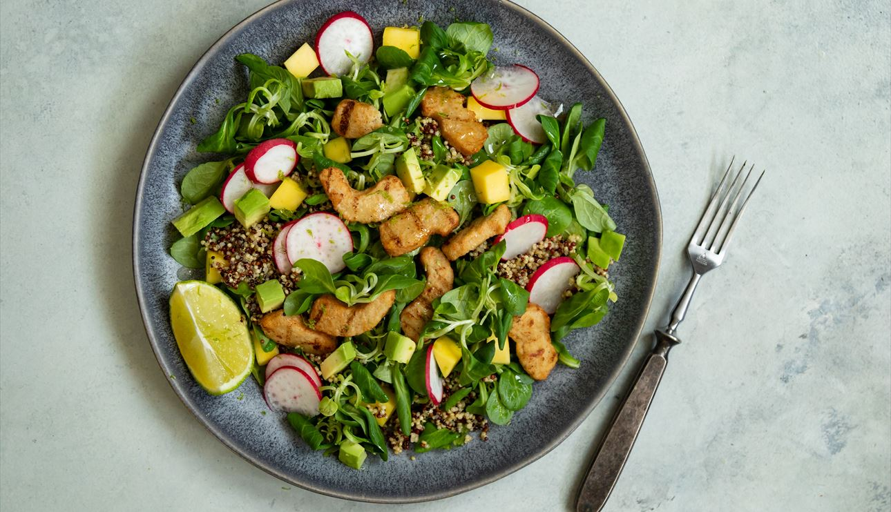
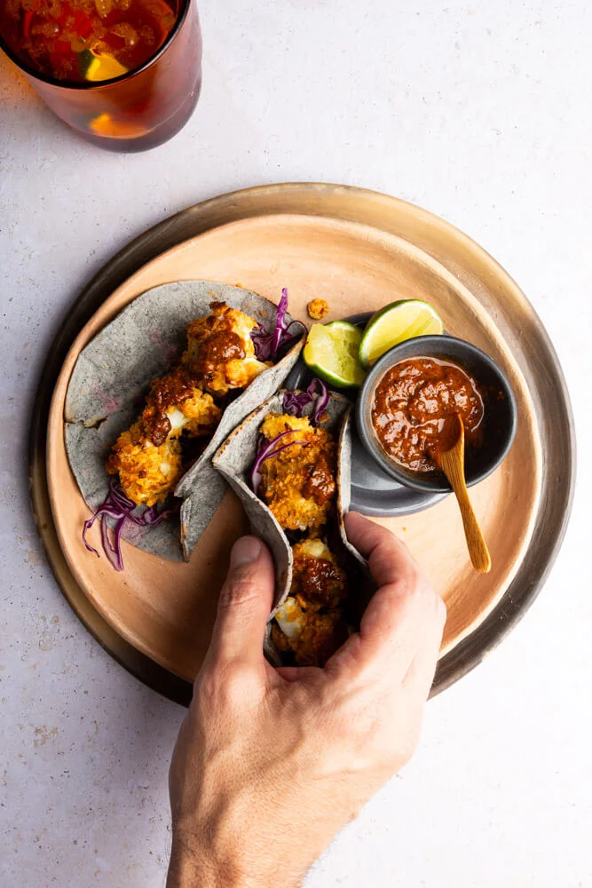

 Ensalada de Quinoa y Kale con Vinagreta de Mango y Lima Tiempo Total: 30 minutos Preparación: 15 minutos Cocción: 15 minutos
Hamburguesa de Quinoa y Garbanzos Tiempo Total: 30 minutos Preparación: 15 minutos Cocción: 15 minutos
 Tacos de Coliflor con Salsa de Aguacate y Cilantro Tiempo Total: 40 minutos Preparación: 15 minutos Cocción: 25 minutos
Ramen de Pollo con Jengibre y Ajo Tiempo Total: 40 minutos Preparación: 15 minutos Cocción: 25 minutos
Pasta de Calabacín con Pesto de Albahaca y Almendras Tiempo Total: 20 minutos Preparación: 15 minutos Cocción: 5 minutos
Risotto de Betabel y Queso de Cabra Tiempo Total: 50 minutos Preparación: 15 minutos Cocción: 35 minutos